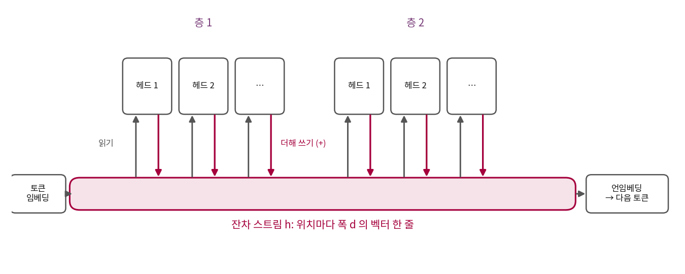

들여다보기 1: 칠판과 헤드
이 장의 물음
대화형 모델에게 처음 보는 이름이 든 긴 글을 붙여 넣고 그 사람에 대해 물으면, 모델은 글 앞쪽에 한 번 나온 이름을 철자 하나 틀리지 않고 다시 쓴다. 학습 데이터에 한 번도 없던 이름이라도 그렇다. 모델의 파라미터는 학습이 끝나면 바뀌지 않으니, 그 이름은 파라미터 어디에도 적혀 있지 않다. 그렇다면 모델 안의 무엇이 방금 읽은 글에서 이름을 찾아 베껴 쓰는 걸까?
지금까지 우리는 모델을 바깥에서만 보았다. 손실이 얼마로 내려갔는지, 샘플이 얼마나 그럴듯한지를 재고, 안에서 무슨 일이 일어나는지는 묻지 않았다. 이 장은 처음으로 모델을 열어 본다.
- 트랜스포머의 층들은 서로 어떻게 정보를 주고받을까? 층 하나가 계산한 것은 어디에 남을까?
- 어텐션 헤드 하나가 하는 일을 「어디를 보나」와 「무엇을 옮기나」로 나눠 읽을 수 있을까?
- 앞에 나온 토큰을 찾아 그다음 토큰을 베끼는 일은 헤드 몇 개가, 어떻게 나눠 맡을까?
- 그 능력은 학습 중 언제 생길까? 천천히 자랄까, 어느 순간 갑자기 생길까?
잔차 스트림: 층들이 함께 읽고 쓰는 칠판
루나가 매번 다른 동화를 쓰게 된 날, 서연은 설정서를 펴고 둘째 줄 「앞에서 한 말을 기억한다」를 손가락으로 짚었다. 민준은 서연의 이름을 넣어 시험해 보았다.

「Once upon a time, there was a girl named Seoyeon. She liked to read books. One day,」까지 주고 그리디 선택으로 이어 쓰게 했어. 「Seoyeon started to read the book.」 이름을 끝까지 맞게 썼어!

그런데 온도를 주고 뽑으면 Seoye, Sereon, Serelon 이잖아. 기억하는 거야, 마는 거야?

둘 다 맞아요. 루나가 두 번째 「Seoyeon」의 토큰마다 준 확률을 보면 알 수 있어요. 그리고 그 확률을 누가 만들어 냈는지는, 이제 모델 안을 열어 봐야 알 수 있어요.
이 장이 끝나면 우리는 루나 안에서 앞에 나온 토큰을 찾아가 베끼는 헤드 두 개를 찾아내고, 그 헤드가 학습 중 언제 생기는지를 손실 곡선 위에서 잡는다.
선생님이 가리킨 숫자를 보려면 토큰부터 알아야 하는데, 우리 BPE 는 「 Seoyeon」을 ␣S | e | oy | e | on 다섯 토큰으로 자른다. 동화를 쓰는 8층 GPT 가 이야기 안의 두 번째 「Seoyeon」에서 토큰마다 준 확률은 「S 다음 e」 0.9989, 「e 다음 oy」 0.9521, 「oy 다음 e」 0.9873 인데 마지막 「on」은 0.0186 이다(sources/circuits/analyze.out 4절). 처음 네 토큰은 거의 확실하게 베끼다가 마지막 하나를 놓치니, 확률대로 뽑으면 「Seoye」에서 끊기기 쉽다. 이 확률을 만드는 계산을 따라가려면 먼저 트랜스포머 안에서 정보가 어디에 놓이는지부터 알아야 한다.
최적화 강의는 잔차 연결을 깊은 망이 학습되게 하는 장치로 보았지만, 같은 구조를 거꾸로 읽으면 다른 그림이 나온다. 우리 GPT 의 블록은 h = h + self.attn(self.ln_1(h)) 한 줄로 되어 있어서, 어텐션은 h 를 읽고 계산한 결과를 h 에 더할 뿐 h 를 지우거나 새로 쓰지 않는다. 그러면 토큰 임베딩에서 시작한 h 는 모든 층의 출력이 더해진 합이 되고, 마지막 층 뒤의 h 를 언임베딩 행렬로 곱하면 다음 토큰의 로짓이 된다.
(층 정규화는 식에서 뺐는데, h 를 읽을 때 크기를 맞출 뿐 h 에 무엇을 더하지는 않는다.)
역사: 회로를 읽으려고 모델을 줄이다
이 구조를 해석의 출발점으로 삼은 글은 「트랜스포머 회로의 수학적 틀(A Mathematical Framework for Transformer Circuits)」이다. Anthropic 의 넬슨 엘하지(Nelson Elhage)와 동료들(닐 난다, 캐서린 올슨 등, 교신 크리스 올라)이 2021년 12월 22일 「트랜스포머 회로」 연재에 올렸다. 그들의 고민은 큰 언어 모델이 너무 복잡해서 어디서부터 읽어야 할지 모른다는 것이었고, 그래서 거꾸로 가장 작은 트랜스포머부터 읽기로 했다. MLP 를 빼고 어텐션만 남긴 모델을 층 0개, 1개, 2개로 학습해, 가중치만 보고 그 모델이 무슨 계산을 하는지 끝까지 설명해 보려 한 것이다.
그들은 층들이 모두 같은 벡터 줄을 읽고 거기에 더해 쓴다는 점에 주목했다. 앞 층이 더해 둔 것을 뒤 층이 읽을 수 있고, 어느 층도 다른 층의 출력을 지우지 않으니, 그 벡터 줄은 모든 층이 함께 쓰는 통신 통로가 된다. 마지막 h 는 「임베딩 + 층마다 헤드들이 더한 것」의 합으로 풀어 쓸 수 있으므로, 출력은 그 항 하나하나가 보탠 것의 합으로 나눠 읽을 수 있다. 같은 글에서 그들은 층이 없는 트랜스포머가 바이그램(앞 토큰 하나로 다음 토큰을 맞히는 표)을 배우고, 그 표를 가중치에서 바로 읽을 수 있다고 보였다.

모든 층이 읽고 더해 쓰는 벡터 줄
위치마다 하나씩 있는 폭 d 의 벡터 h 를, 모든 층이 읽고 계산한 결과를 더해 쓰는 공용 통로로 볼 때 이를 잔차 스트림(residual stream, 층들이 함께 읽고 쓰는 칠판)이라 부른다. 칠판에 비유하면 층마다 앞에 나와 칠판을 읽고, 자기 생각을 지우지 않고 덧붙여 적고 들어가는 회의와 같다. 뒤에 나온 사람은 앞사람들이 적은 것을 모두 볼 수 있지만, 누가 무엇을 적었는지는 칠판만 봐서는 섞여 있다.
이 그림으로 보면 층이 하나도 없는 모델은 임베딩에서 언임베딩으로 바로 가는 통로 하나뿐이다. 지금 토큰 하나만 보고 다음 토큰의 로짓을 내니, 할 수 있는 일은 바이그램뿐이다. 층을 하나 더하면 헤드들이 다른 위치의 잔차 스트림을 읽어 지금 위치에 더할 수 있게 되고, 층을 둘로 늘리면 둘째 층의 헤드가 첫째 층의 헤드가 더해 둔 것까지 읽을 수 있다. 앞에 나온 이름을 찾아 베끼는 일에 왜 층이 둘 필요한지는 「둘째 층이 첫째 층의 출력을 읽을 수 있다」는 데서 나온다.
ML에서: MLP 가 없는 루나
이 장의 실험은 엘하지와 동료들처럼 MLP 를 뺀 어텐션만 있는 모델로 한다. 공용 모듈 sources/common/gpt.py 의 GPT 를 mlp=False 로 만들면 되고, 층마다 헤드 8개, 폭 256, 문맥 256 토큰이다. 타이니스토리즈로 학습한 2층 모델의 파라미터는 1,641,984 개이고 그 가운데 임베딩을 뺀 것은 527,872 개다. 동화를 쓰는 8층 GPT 의 2,760만 개에 비하면 아주 작아서, 헤드 열여섯 개를 하나하나 열어 볼 수 있다.
문제 1. 층이 없는 모델의 바이그램은 대칭인가
층이 하나도 없는 트랜스포머는 지금 토큰 a 의 임베딩을 바로 언임베딩해 다음 토큰 b 의 로짓을 낸다(위치 임베딩과 층 정규화는 무시한다). (가) 어휘 4,096 개의 바이그램 표를 칸마다 따로 적으면 칸이 몇 개인가? 폭 256 의 임베딩 행렬 하나로 이 표를 만들면 파라미터는 몇 개인가? (나) 우리 모델처럼 언임베딩 행렬이 임베딩 행렬과 같으면(W_U = Eᵀ), 「a 다음 b」의 로짓과 「b 다음 a」의 로짓은 어떤 관계인가? (다) (나)의 성질은 실제 글의 바이그램과 맞는가?
(가)는 4,096 × 4,096 = 16,777,216 칸이야. 임베딩 행렬은 4,096 × 256 = 1,048,576 개니까 열여섯 분의 일로 표 전체를 만드는 거고.

(나)는 식으로 써 볼게. a 의 임베딩을 e_a 라 하면 b 의 로짓은 e_b · e_a 야. 공유하니까 언임베딩의 b 번째 줄도 e_b 고. 그럼 「b 다음 a」의 로짓은 e_a · e_b 인데, 내적은 순서를 바꿔도 같으니까… 둘이 같아.
그럼 (다)는요? 동화에서 「Once 다음 upon」과 「upon 다음 Once」를 생각해 봐요.

「Once upon」은 동화마다 나오는데 「upon Once」는 거의 안 나오죠. 실제 바이그램은 대칭이 아니에요. 층 없는 모델에 임베딩을 공유시키면 이걸 못 배우겠네요.

위치 임베딩과 층 정규화를 넣으면 조금은 깨지겠지만, 대칭인 내적 하나로 비대칭인 표를 만들기는 어렵겠다. 그러면 우리 모델에서는 층들이 이 비대칭을 채워 넣는 일도 맡겠네.
그래요. 엘하지와 동료들의 모델은 임베딩을 공유하지 않아서 이런 일이 없었어요. 같은 이론을 우리 모델에 걸 때는 우리 모델이 원 논문과 어디가 다른지부터 적어 두는 게 좋아요.
문제 2. 2층 모델의 출력은 몇 개의 항으로 나뉘나
어텐션만 있는 2층 모델(층마다 헤드 8개)에서 층 정규화를 무시하면 마지막 잔차 스트림을 「임베딩에서 바로 온 것 + 첫째 층 헤드들이 더한 것 + 둘째 층 헤드들이 더한 것」으로 쓸 수 있다. 그런데 둘째 층의 헤드가 읽는 잔차 스트림에는 첫째 층 헤드들의 출력도 들어 있다. (가) 둘째 층 헤드 하나의 출력은 그 헤드가 「임베딩」을 읽은 부분과 「첫째 층 헤드 m 의 출력」을 읽은 부분으로 몇 개의 항으로 나뉘는가? (나) 마지막 잔차 스트림 전체는 몇 개의 항으로 나뉘는가? (다) 앞에 나온 이름을 베끼려면 이 가운데 어떤 항이 필요할 것 같은가?
(가)부터. 둘째 층 헤드가 읽는 건 임베딩 하나 더하기 첫째 층 헤드 8개의 출력이니까, 읽는 것을 나누면 9개 항이야. 단, 어텐션 가중치도 읽는 것에 따라 바뀌니까 엄밀히 그렇게 깔끔하게 나뉘는지는 모르겠어.
좋은 의심이에요. 원 논문도 어텐션 가중치를 고정해 놓고 보면 값 쪽이 그렇게 나뉜다고 했어요. 어텐션 가중치를 고정한다는 조건에서 (나)는요?
임베딩에서 바로 가는 항 1개, 첫째 층 헤드만 지나는 항 8개, 둘째 층 헤드가 임베딩을 읽는 항 8개, 둘째 층 헤드가 첫째 층 헤드의 출력을 읽는 항 8 × 8 = 64개. 다 더하면 81개야.
(다)는 마지막 64개겠다. 첫째 층 헤드가 어떤 위치에 무언가를 적어 두고, 둘째 층 헤드가 그걸 읽어야만 할 수 있는 일이 있다면, 1층 모델에는 그 항 자체가 없으니까.

81개 중에 진짜 중요한 건 몇 개뿐일 것 같은데. 하나씩 꺼 보면 알 수 있지 않아?